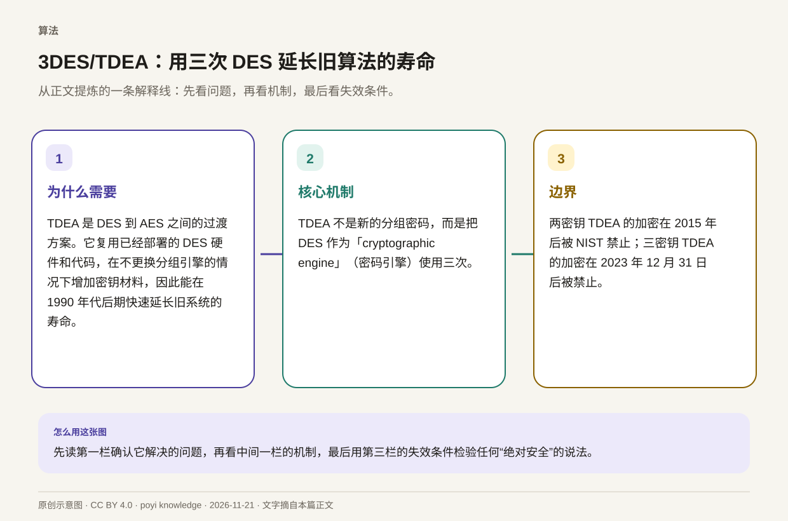
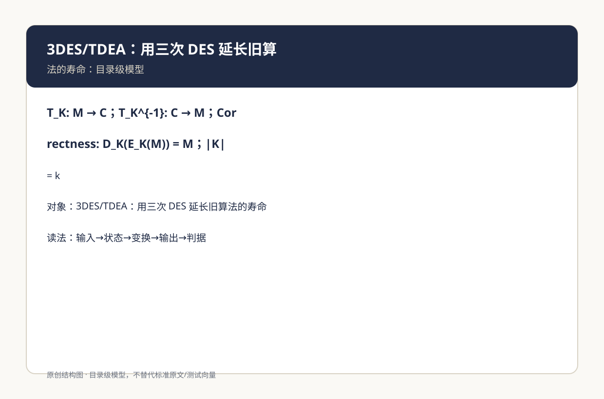

原理与机制
算法：3DES 三重数据加密（Triple DES）。TDEA 不是新的分组密码，而是把 DES 作为「cryptographic engine」（密码引擎）使用三次。它保留 DES 的 64 位分组，用一个由三个 DES 密钥组成的密钥束（key bundle）做加密—解密—加密：
C = E_K3(D_K2(E_K1(P)))
加密时先用 K1 加密，再用 K2 解密，最后用 K3 加密。解密按相反顺序使用同一组密钥：
P = D_K1(E_K2(D_K3(C)))
中间的解密步骤不是笔误：EDE 结构让三密钥选项在 K1=K2=K3 时退化为单 DES，便于兼容旧系统。TDEA 的分组仍是 64 位，内部共执行 3×16=48 个 DES 轮；它扩大了密钥材料，没有扩大分组。TDEA 的历史密钥选项有三种：1-key（K1=K2=K3）、2-key（K1=K3）和 3-key（三个独立密钥）。这里的命名按键束中独立密钥的数量描述；FIPS 46-3 的 Keying Option 编号顺序不同（Option 1 为三个独立密钥，Option 3 为三个相同密钥）。按含校验位的名义长度，三者分别是 64、128、192 位；按实际参与算法的有效位数，分别是 56、112、168 位。当前 SP 800-67 Revision 2 只允许 3-key 用于加密，2-key 不得用于加密保护，1-key 只是等价于单 DES 的历史选项。名义位数不等于安全强度：NIST 把 2-key TDEA 的安全强度定为约 80 位，把 3-key TDEA 定为约 112 位。

为什么重要
TDEA 是 DES 到 AES 之间的过渡方案。它复用已经部署的 DES 硬件和代码，在不更换分组引擎的情况下增加密钥材料，因此能在 1990 年代后期快速延长旧系统的寿命。FIPS 46-3 在 1999 年把 TDEA 列为联邦认可算法，同时把单 DES 降为仅限遗留系统。它也是一个关于名义密钥长度的警示。3-key TDEA 的名义密钥材料是 192 位、有效位数 168 位，但公开安全评估只给它约 112 位强度；2-key TDEA 名义 128 位、有效 112 位，实际约 80 位。把 192 或 168 直接当作安全位数，会高估系统余量。TDEA 的 64 位分组还带来生日碰撞问题，使它在高数据量协议中比密钥长度看起来更脆弱。TDEA 的历史作用不是永远安全，而是在迁移窗口内够用。当 AES 可用、迁移成本可接受时，继续使用 TDEA 就变成兼容性选择，而不是安全选择。
应用与实例
TDEA 的典型部署是联邦机构和较早的网络协议中的遗留系统。它常出现在需要兼容 DES 硬件的场景：政府终端、旧式设备和早期 TLS/VPN 配置。FIPS 46-3 明确把单 DES 限制为遗留系统，并把 TDEA 作为当时的联邦对称加密选择；这反映了 1999 年的迁移策略，而不是今天的批准状态。TDEA 通常与工作模式一起使用。ECB 对每个 64 位块独立加密；CBC 需要初始向量并隐藏重复模式；CFB/OFB 把分组密码变成流式生成器。模式不改变 64 位分组和 48 轮引擎，也不能修复密钥选项或数据量限制。具体模式属于工作模式实体，本文不展开。在现代协议中，TDEA 主要作为兼容选项存在。只要协议还允许它，长连接和高数据量就会暴露 64 位分组的生日边界；因此，还能解密旧数据与还应加密新数据是两个不同问题。

边界与攻击面
两密钥 TDEA 的加密在 2015 年后被 NIST 禁止；三密钥 TDEA 的加密在 2023 年 12 月 31 日后被禁止。NIST 在 2023 年宣布撤销 SP 800-67 Revision 2，并于 2024 年 1 月 1 日正式撤销；撤销后 TDEA 只允许用于已有保护数据的解密、密钥解包和 MAC 验证，不再用于新的加密保护。这些日期是政策状态，不是算法突然失效的物理时刻。它们表示：新系统不应再选择 TDEA；旧系统需要按风险安排迁移，并保留解密遗留数据的能力。### 安全强度低于名义密钥长度
NIST SP 800-57 把 2-key TDEA 的安全强度定为约 80 位，把 3-key TDEA 定为约 112 位。3-key 的名义密钥材料是 192 位、有效位数 168 位，但安全强度只有 112 位；这是评估结果，不是实现缺陷。80 位和 112 位都低于现代 128 位目标，不能支撑长期新数据。### 64 位分组、2²⁰ 上限与 Sweet32
TDEA 的分组仍是 64 位。SP 800-67 Revision 2 把单个 3-key 密钥束的加密数据量限制为 2²⁰ 个 64 位块（8 MiB），并明确 2-key TDEA 不得用于加密保护。这个标准上限比生日界严格得多。生日界本身在约 2³² 个块（约 32 GiB）后使碰撞概率不可忽略；Sweet32 类攻击利用长连接中的重复密文块恢复部分明文。TDEA 的有效 168 位密钥和 112 位安全强度不能弥补 64 位分组：生日边界由分组长度决定，不由密钥长度决定。### 弱密钥与密钥束退化
TDEA 的安全性依赖三个 DES 密钥的质量。SP 800-67 要求避免 DES 弱密钥和半弱密钥，并明确禁止三个密钥相同。如果三个密钥都取同一个 DES 弱密钥，TDEA 就退化为该弱密钥下的单 DES：同一弱密钥连续两次加密会回到明文（E_K(E_K(P))=P）；把三个相同密钥当作 3DES 只是单 DES 的昂贵包装。### 1-key 选项不是更强的 DES
1-key 选项（K1=K2=K3）在数学上就是单 DES。它作为历史密钥选项出现在 FIPS 46-3/ANSI X9.52 的语境中，但 SP 800-67 §3.1 禁止三个密钥相同，因此它也不是有效的 TDEA 密钥束。任何把 1-key TDEA 当作三密钥 TDEA 的部署，都只得到单 DES 的有效密钥（56 位）。TDEA 的教学实现只验证 EDE 结构和已知答案，不处理填充、模式、密钥管理、侧信道或协议集成。真实系统还要处理密钥束生成、弱密钥检查、初始向量、数据量上限和迁移策略；这些失败模式不在算法公式内。
历史与背景
TDEA 的标准化与 ANSI X9.52 有关。FIPS 46-3 在 1999 年把 TDEA 列为联邦认可算法，并说明单 DES 仅限遗留系统。NIST SP 800-67 随后给出 TDEA 的详细建议，最终版本 Revision 2 于 2017 年发布，并在 2024 年 1 月 1 日撤销。迁移时间表逐步收紧：两密钥 TDEA 加密在 2015 年后被禁止；三密钥 TDEA 加密在 2023 年底后被禁止；2023 年 NIST 宣布撤销 SP 800-67 Revision 2，2024 年正式撤销。AES 成为替代方案，但大量遗留系统使 TDEA 的退出持续了二十年。这段历史说明，算法标准化不是一次性事件：认可、弃用、禁止新用途、撤销和遗留解密支持是不同阶段。把曾经是联邦标准读成现在仍被批准，会得到相反结论。
逐步示例与核验
复算示例
取标准或公开测试向量中的一组参数，按“输入—执行—输出”记录：先写出该条目的形式式 (C=\mathrm{DES}_K(P),\quad |P|=|C|=64)；再按规范顺序执行每一步，最后把输出与独立实现或标准向量逐字节对照。若没有可引用的数值向量，就只记录结构步骤，不伪造输出。
参考出处
- Wikipedia search entry for 3DES 三重数据加密. https://zh.wikipedia.org/w/index.php?search=3DES%20%E4%B8%89%E9%87%8D%E6%95%B0%E6%8D%AE%E5%8A%A0%E5%AF%86
- Handbook of Applied Cryptography (Menezes, van Oorschot, Vanstone). https://www.cacr.math.uwaterloo.ca/hac/